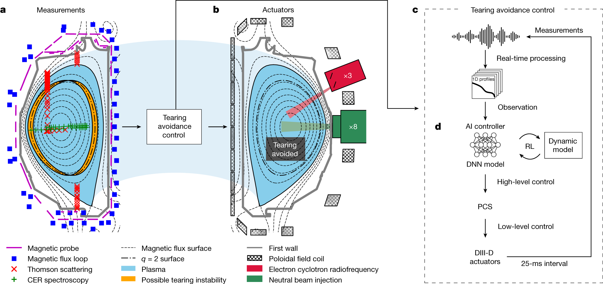
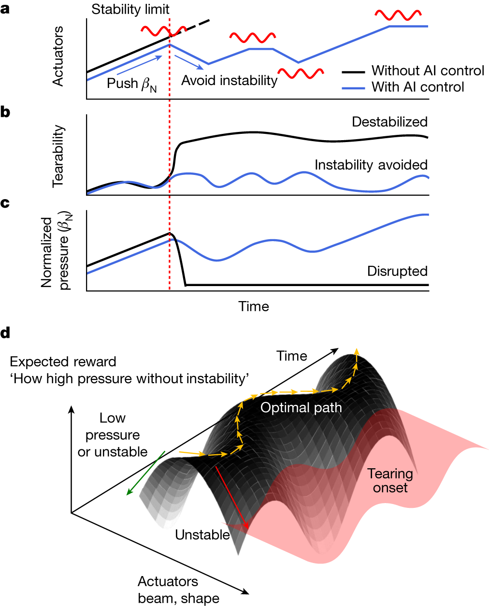
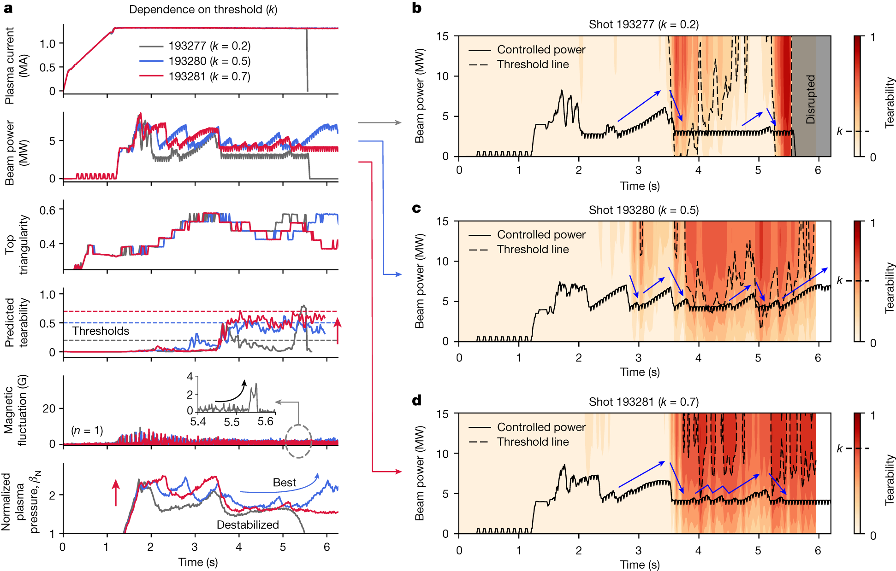

Avoiding fusion plasma tearing instability with deep reinforcement learning
Nature · 2024 · 优先阅读
适合借鉴风险预测、约束阈值与控制效果联合呈现。
许可：CC BY 4.0。分区详见 筛选依据，未宣称已核验中科院一区。
Fig. 1 风险预测接入控制链
用途： 安全与约束。
画法借鉴： 把感知预处理、风险估计、高层策略和底层执行分开，标清动作实际作用位置。
解释边界： 风险预测器的输出不等于经过证明的安全保证。

Seo, Jaemin; Kim, SangKyeun; Jalalvand, Azarakhsh; Conlin, Rory; Rothstein, Andrew; Abbate, Joseph; Erickson, Keith; Wai, Josiah; Shousha, Ricardo; Kolemen, Egemen. Avoiding fusion plasma tearing instability with deep reinforcement learning. Nature (2024), Fig. 1. https://doi.org/10.1038/s41586-024-07024-9. CC BY 4.0. 未裁切、未重绘；按比例显示。
Fig. 2 状态空间里的安全边界
用途： 安全与约束。
画法借鉴： 将轨迹放入风险与性能构成的相空间，标出风险等值线与限制区域。
解释边界： 预测边界的可靠程度取决于模型误差和分布覆盖。

Seo, Jaemin; Kim, SangKyeun; Jalalvand, Azarakhsh; Conlin, Rory; Rothstein, Andrew; Abbate, Joseph; Erickson, Keith; Wai, Josiah; Shousha, Ricardo; Kolemen, Egemen. Avoiding fusion plasma tearing instability with deep reinforcement learning. Nature (2024), Fig. 2. https://doi.org/10.1038/s41586-024-07024-9. CC BY 4.0. 未裁切、未重绘；按比例显示。
Fig. 4 风险阈值改变控制行为
用途： 敏感性与消融。
画法借鉴： 并列显示阈值设置、控制动作和风险响应，解释保守程度的代价。
解释边界： 少量单次实验的差异不能直接解释为显著性。

Seo, Jaemin; Kim, SangKyeun; Jalalvand, Azarakhsh; Conlin, Rory; Rothstein, Andrew; Abbate, Joseph; Erickson, Keith; Wai, Josiah; Shousha, Ricardo; Kolemen, Egemen. Avoiding fusion plasma tearing instability with deep reinforcement learning. Nature (2024), Fig. 4. https://doi.org/10.1038/s41586-024-07024-9. CC BY 4.0. 未裁切、未重绘；按比例显示。